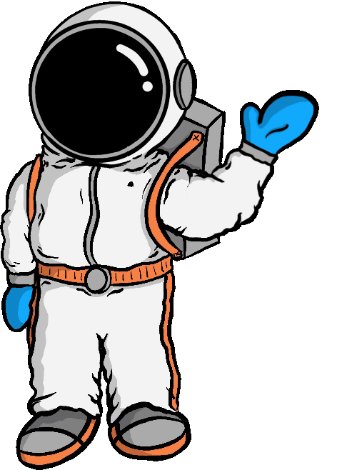
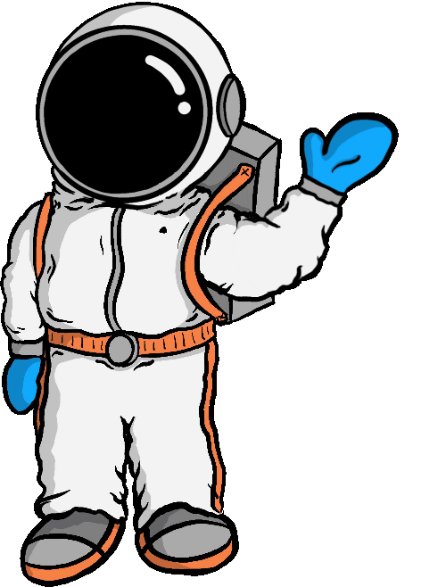
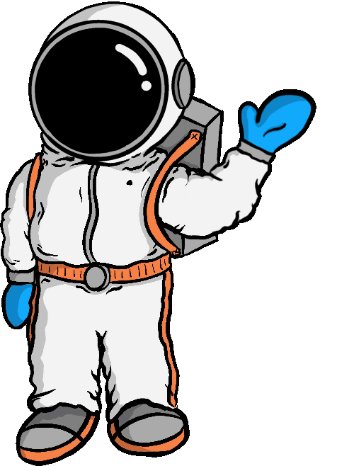
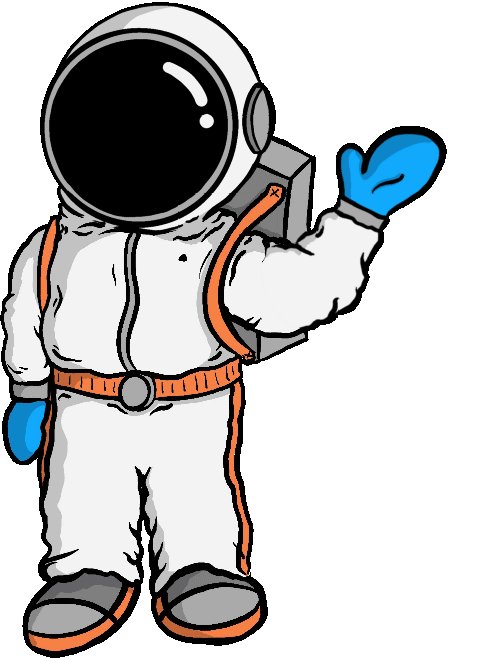

spil igen
 


Hold da op!
Vi fandt en masse gode informationer om planeterne.
Tak fordi du tog med mig på min mission!

 

Vi fandt en masse gode informationer om planeterne.
Tak fordi du tog med mig på min mission!